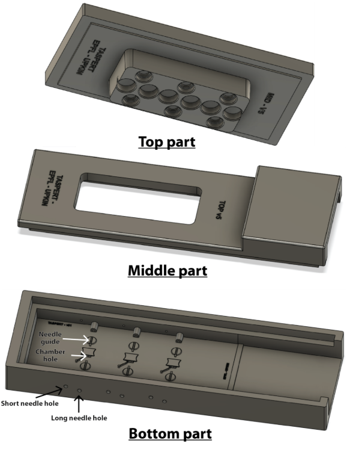

Scope
This protocol is describing how to produce the MiniCAUTI lumens and seed them with cells of interest.
Equipments & Consumables
Equipment List
- • SLA printer (example: Formlabs, Elegoo)
- • A plastic bucket (2 is better)
- • Plasma cleaner (Ex: Diener Zepto)
- • 60°C oven
- • 365 nm UV source
- • 37°C 5% CO2 incubator
- • Optional: Heating plate
- • BSL Hood
- • Centrifuge (cooled is better)
- • Scale (0.1 g resolution)
- • 1.2mm, 4mm and 5mm biopsy punch
- • Spatula & Small Weighting spatula
- • Optional: Twizzers
- • Small box to contain ice (polystyren or similar)
Consumables
- • Gloves (for all steps described in this protocol)
- • Vessel to grow cells (example: “T75”)
- • SLA resin (example: Formlabs Black 4)
- • 3M Magic tape
- • Ibidi Lid
- • Petri dish (Best is quadriPERM 4 slots)
- • Microscopy grade paper
- • Sylgard® 184 PDMS and curing agent
- • A plastic glass/plastic weighting cup
- • Precision pipette (P1000, P200 and P20) and associated tips
- • Isopropanol & Ethanol 70% & Sterile DI Water
- • 76*25mm #1.5 glass slide
- • Needle of choice (for bladder: 0.45mm ⌀ 40mm long, or 23G/25G blunt 1/2" long, or 23G/25G blunt 1 1/2" long)
- • PTFE tubes matching your needle size
- • Hydrogel of choice. For bladder: TeloCol®-6 collagen I 6mg/mL
- • 1mL tubes
- • Epithelial cells (H6215 bladder epithelial cells)
- • Cell culture media (Example: H6621 Epithelial cell culture media)
- • Fetal Bovine Serum
1 Mold Fabrication
Required for this step
- SLA printer
- SLA resin
- Isopropanol or Washing solution from Formlabs
- One bucket, two is better
- Use your printer to print the different mold part (bottom, middle and top).
- After the print, let the molds in a vertical position for 30min to remove most of the excess resin.
- Wash: 40min in successive baths of isopropanol, and finally pissing clean IPA on it until no large traces or resist is left.
- Blow dry air on it. Pass the needles through the holes to ensure the holes are not too small. You should do this at this stage while the resist is a bit soft and excess resit can be extruded away by the needle.
- Make another quick IPA wash with clean IPA using the pissette.
- Cure 30min+ at 60°C under mechanical load to avoid warping. Then cure for 24+ h at 60°C and under UV (365nm).
- Make another quick IPA wash to remove potential chemicals formed at the surface during curing.

2 PDMS Chip Fabrication
Required for this step
- Sylgard® 184 PDMS and curing agent
- A plastic glass/plastic weighting cup
- A scale (0.1 g resolution)
- Spatula & Small weighting spatula
- Prepare a 10:1 PDMS:Curing agent solution in a cup, and mix it thoroughly. Count about 14g per mold. Degas the mixture ~20min in a vaccum chamber.
- Blow dry air on the molds, insert 3 short 25g needles into the mold into their respective side holes (Figure 1). Do the same with 6 long 450 µm. This needle must cross the chamber and go inside the reservoir on the other side. You can clean the needles using IPA and a tissue if they are dirty.
- Assemble the 3 parts of the mold together and hold them together using clamps. You can stack up to 4 molds together. Be careful to always have the top part in contact with the clamp heads, otherwise the bottom part (which is empty), will bend while exposed to heat.
- Put the mold standing and cast the prepared PDMS into it via the PDMS opening. Place the mold(s) into the vaccum chamber and put it under negative pressure for 30-1h (timing not critical), until there is no bubble left.
- Put the chips inside a 60°C oven for at least 4h (overnight or more is ok). Don't go over 70°C for the mechanical stability of the 3D printed mold.
- Take the molds out of the oven. Remove the needles from the molds.
- Carefully remove the top part of the mold using a wide and thin spatula. First place it inside the gap, make a gentle lever, and push the spatula further in. Then make a gentle lever again. Do it from the 4 sides of this top part. Do the same for the middle part of the mold.
- Then, peel the PDMS off the molds by gently detaching the 4 sides using a small spatula before.
(For the Mckinney lab, this step is done outside the workshop, on the appropriate bay next to the workshop.)
Now that the PDMS chip is free from the mold, we need to punch holes in it, using a biopsy tool. 1.2mm for the hydrogel port (1 hole), 4mm for the apical well (2 holes) and 5mm for the basal wells (2 holes).
- Put a piece of tape on your cutting mat, and place the chip onto it, patterned face down. Punch the holes from the top.
- Be careful to not connect the hydrogel channel to the wells, or to damage the chamber while punching the wells.
- It is not critical, but convenient for the next steps, to keep the phase guide (PDMS “dyke”) between the hydrogel chamber and the basal well.
3 Assembly to Glass Coverslip
Required for this step
- Plasma cleaner
- 60°C Oven
- 3M Magic tape
- 1.5# 25*76mm glass coverslip
- Clean room paper
- The punched PDMS chip
- Put 3M magic tape onto the surfaces of the chips to remove potential dust and PDMS particles.
- Clean a #1.5 25*76mm glass coverslip wipping it with a clean room paper followed by dry air.
- Press the VENTILATION button to get the plasma chamber to atmospheric pressure and release the hub.
- Insert the glass coverslip and a PDMS chip (after removing the magic tape), face with microstructures UP, inside the plasma chamber. You can put up to 2 chips + 2 glass slides at the same time in the chamber. Be careful that the glass slides are fully in contact with the glass support.
- Close the hub, turn off VENTILATION, and press PUMP, until the pressure reaches ~0.2 mbar.
- Turn the O2 knob counter clockwise until the pressure reaches 0.6-0.8 mbar. Check the parameters: Time 0:10 (30s), Power: 4:50 (45%).
- Press GENERATOR to start the plasma. Check the plasma has started, if not give a quick boost of power (~6:00) and go back to 4:50 after it’s ON.
- At the end of the plasma activation, GENERATOR turns off. Close the O2 valve (clockwise, gently), turn PUMP off, and click VENTILATION. The chamber goes back to atmospheric pressure in about 10s.
- Put the hub on the table, pull the thick glass slide out on the hub, and place the PDMS slabs onto their respective glass, quickly.
- Put the thick glass slide back inside the plasma chamber, and apply pressure all around the chips, in particular at the sides and interfaces with air. You can use a P1000 tip to apply pressure at specific spots around the patterns of interest.
- Incubate 0.5h in an oven @60°C (longer than 1h will make the chip hydrophobic, making the later hydrogel casting trickier).
The chips are ready to be processed. The next steps of the protocol are happening under a sterile hood (for McKinney lab: in the “P1”).
4 Surface Treatment of the Hydrogel Chamber
This section describes the treatment of the PDMS of the hydrogel chamber to promote adhesion of the hydrogel to the chamber. Do this step the day of the hydrogel injection. Now, we want to treat the surface of the PDMS chamber so that the hydrogel that will come into it later, will crosslink with the walls of the chamber, making the devices more robust. While it is possible to use PEI followed by Glutaraldehyde, here we focus on a Polydopamine (PDA) treatment.
Required for this step
- Dopamine hydrochloride
- PDMS Chip
- Pipette and tips
- Sterile DI Water
- Dilute the 1 mg aliquot in 1000 µL of 10 mM Tris-HCl pH=8.5 (Final concentration: 2% w/v).
- Inject the solution from the hydrogel port. Make sure the solution doesn’t go to the basal or apical well (not critical, but not desired). If so, just remove it. It is ok if the PDA goes in the PDMS tubes.
- Incubate for 120 min at RT, or Overnight at 4°C, protected from light. A dark brown deposit forms, which is normal.
- Using a vaccum pump and a tip, remove all the PDA.
- Wash the chip with ethanol 70%, from the basal or hydrogel. This wash also serves as sterilization. Now you want to work in sterile conditons.
- Wash with sterile distilled water.
- Dry the chip ~10 min before injection. They need to be dry before receiving hydrogel, but letting them dry for more than 1h makes them hydrophobic, making hydrogel injection harder.
5 Lumen Formation
Required for this step
- Box of 200µL tips in the -20°C freezer
- Hydrogel (here, protocol for TelCol atelocollagen I)
- PTFE tubes (for bladder, we use 0.6 OD tubes)
- Needle of choice (for bladder, we use 450µm)
- Ice and small ice container
- Incubator or heating plate
- Optional: Twizzers
- Get the heating plate to 38°C and the cooled centrifuge to 4°C. Get an ice box with ice (for mckinney lab, orange box) in, and the cold plate onto it. Prepare 1 eppendorf tube(s) with a cap for 4 chips (12 chambers) and place it (them) onto the ice.
- Pipette 20µL of Neutralizing Solution (NS) into the tube. You can add 1 µL of phenol red if you want to track the pH and mixing of the solution.
- Put 2 devices on the cold plate. Get an aliquot of collagen I from the fridge and place it on ice.
- Slowly pipette 180 µL of collagen I and put it back (to cool down the tip), and pipette it up again. Collagen I is quite viscous and requires slow and gentle handling to reach the right volumes, to not create bubbles, and to prevent polymerization during handling. It is important to wait several seconds after releasing the plunger of the pipette to reach the right volume.
- Add it to the capped eppendorf and gently mix the solution on ice, avoiding bubbles. To mix, gently up and down, but also stir using your tip. Avoid touching the tube to prevent heating the collagen.
- Once it’s well mixed, spin it at 15kRPM (need to convert in gs) 0°C 60s (Program 2).
- Pipette about 80µL of the mixed hydrogel (Go very slowly when plunging the tip inside the mix, to avoid carrying bubbles sitting at the surface, down the mix) and very slowly inject it through the hydrogel port. It should cover the whole chamber, but not go into the basal reservoirs (a small drop leaking out the chamber is fine). Fill as many chambers (4-5 should be fine) with this amount.
- Put the devices onto the 38°C plate for 3min. After that time, check if the hydrogel is prepolymerized (it should look milky and homogenous).
- When the devices are prepolymerized, take them out of the incubator and dispense one drop of media (or PBS) in the basal reservoirs, in contact with the hydrogel. The goal is to prevent the hydrogel from drying, which would cause retraction and delamination from the chamber walls.
- Put them back at 37°C for 15-20 min (longer is ok, as long as the hydrogel doesn’t dry), and process another device. Note: After 30min, switch the cooling plate to a cool one in the fridge.
- After this second incubation, the hydrogel is considered fully polymerized. Plug PTFE tubes on the side of the chambers to seal them, fill the basal reservoirs and the apical reservoir opposite of the needle entrance with media (or PBS), put a lid on each device, and store it at 4°C.
- Pull the 0.45mm needle out of the tube to form the hydrogel tube. Put the PTFE tubes into the chip and sheath to close the chip.
- UV treat the chips for at least 1h (hood UVs are stronger), before transferring them to a sterile place. From the next step, everything will be done in sterile conditions (for McKinney lab, in the “P2”).
6 Culturing, Passaging & Seeding
Culturing & Passaging
Required for this step
- BSL hood
- TryplE or Trypsin
- FBS containing media
- Centrifuge
- Optional: Gelatin
Culture your cells following your favorite protocol. When they reach 90-100% confluence, passage them considering a T25 (~2.5*10^6 cells) can seed 10 chambers, and we use ~3-6 µL per chamber.
For bladder cells:
- Remove the media from the vessel (usually, a T25 or T75). Wash the vessel with PBS.
- Detach the cells using warm TryplE. For a T75, use 3mL and incubate it at 37°C for 5min. After 5min, check under the microscope and gently tap the T75 to help the cells detach. If more than 10% of cells are still attached, put it back at 37°C.
- Inactivate the TryplE using FBS containing media. Use 3 times the volume of TryplE.
- Put everything in a falcon (50mL for a T75) and centrifuge 5min at 0.3g.
- One T75 is used to seed 30 chambers. One chamber uses 5µL of cells. Make the calculation of resuspension volume by keeping 20% of extra in case (if you have 20 chambers, plan like if you had 24, so plan 24*5µL=120 µL).
- Take the right amount of cells and resuspend in the planned volume. Put the rest back in culture, freeze it, or discard it.
Seeding Process
Required for this step
- BSL hood
- Cells in suspension
- Box of PDMS devices
- P1000, P20, and tips. Filterless tips
- Centrifuge
- Vaccum pump
- Take a box of 4 devices, aspirate all the media from the basal wells of all the devices using the vaccum pump and a filterless tip. This helps creating pressure from the lumen to the basal wells, helping the cells stick to the walls of the lumen. Do the same for apical wells.
- Take one device and completely remove the media from the lumen of all chambers by putting the tip in contact with the PDMS tube (either side), replacing the media by air. At this stage, you have 3 lumens filled with air and ready to be seeded.
- Pick up 15µL of your concentrated cells solution using a P20 pipette.
- Put the tip in contact with the PDMS tube from one of the apical wells, and release its content rapidly. The air bubble in the lumen should be replaced by the cells. If the cells didn't enter the lumen, aspirate them from the apical well and try again. If you struggle injecting the cells into the lumen, you can try the injection from the other apical well. Don't hesitate to use the vaccum pump to "reset" the lumen. Do this step for the 3 lumens of the device.
- Once the 3 lumens are filled with cells. Make sure there is no bubble in the PDMS tubes flanking the lumen, nor in the lumen, to avoid deformation/drying of the hydrogel.
- Aspirate the excess of cells from the apical well for the 3 lumens.
- Check the seeding efficiency under the microscope. If less than 50% confluent, you might need to concentrate your solution of cells by respinning them, and reseed. If the seeding is heterogeneous, it’s ok because step X will aim at homogeneizing it.
- Do the 2-5 for the 3 other chips of the box.
- Take a P20 and fill it with 20µL of media and put a tiny drop of media at each PDMS tube extremity, to prevent the lumen from drying during the incubation.
- Put the box of 4 devices in the 37°C 5% CO2 incubator and rotate the box every 15 min in the incubator along the 2 large faces of the box to create an even cell cover. Total incubation should be 45-60min
- After the incubation is done, put warm culture media in the basal wells.
- Put warm culture media in one of the apical well and aspirate from the other. Do this wash twice, one in each direction. If the flow is not going from one apical well to the other, check for potential bubbles in the lateral channel. If you see bubbles, you need to aspirate them using a P20, placing the tip in the PDMS tube from the apical well (just like if you wanted to seed cells, but you aspirate media instead of depositing cells).
- After the second wash, fill the apical wells and put the device in the incubator.
7 Daily Processing
Required for this step
- P1000 Pipette and tips
- Cell culture media
- Devices
- BSL hood
In sterile conditions, wash the apical side every X day, the basal reservoirs every Y days. X and Y can be 2,3 especially during the first days when the number of cells is low.
For bladder: X,Y = 1,2